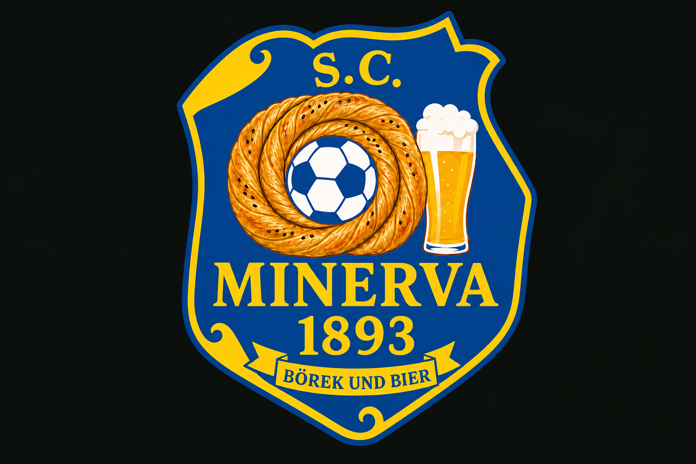
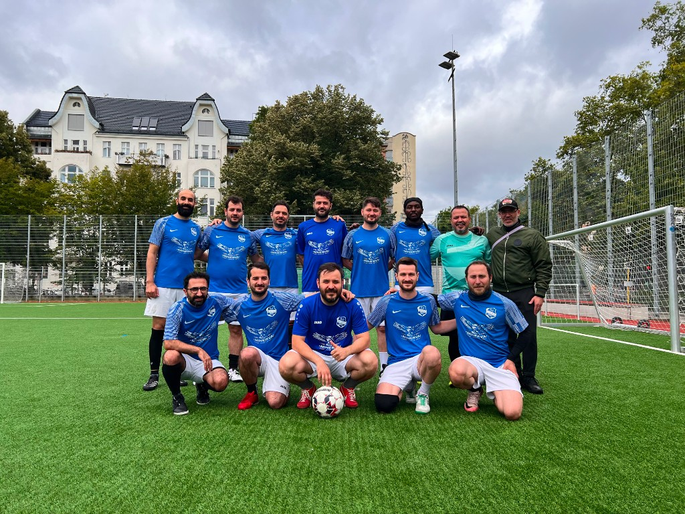
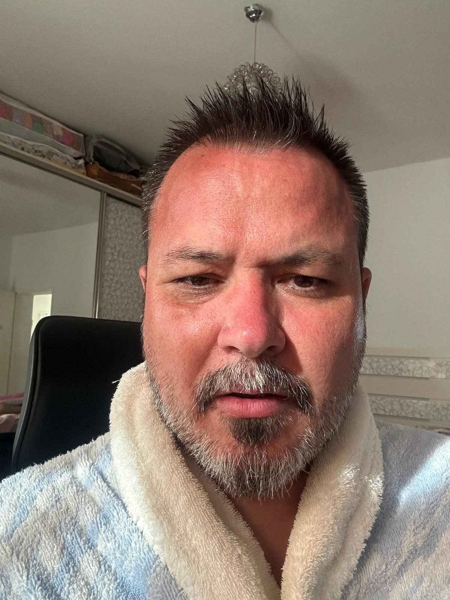

Willi-Boos-Stadion · July 5, 2026
Group A: 6th · 1W 2D 3L · 3 goals scored
Goal scorers: Dincer, William (vs Roter Stern) · Fatih (vs Medizin)
| Kick-off | Match | Result |
|---|---|---|
| 11:24 | vs Ballosophen | 0–0 |
| 11:48 | vs Roter Stern Berlin | 2–1Dincer, William |
| 12:36 | vs THC 1 | 0–1 |
| 13:00 | vs FC Juno | 0–0 |
| 13:48 | vs Medizin Friedrichshain | 1–2Fatih |
| 14:36 | vs Fevernova | 0–1 |
| 15:40 | Placement vs Pinchos | 2–2Dincer, Gulam · pens 5–4 (Genc, Gulam, Dincer) |

11th of 14 sounds disappointing. The fixture list tells a different story: we were competitive in the tournament's hardest group, never lost by more than one goal, and took points off three teams that finished in the top eight.
Group A wasn't a normal group — it was a mini-championship. Four of the top eight teams in the entire field came from our group, including the champions.
| Team | Final rank |
|---|---|
| THC 1 | 1st |
| Ballosophen | 4th |
| Fevernova | 5th |
| FC Juno | 8th |
| Roter Stern | 10th |
| Minerva | 11th |
| Medizin | 13th |
Opponent: 4th overall. Beat Roter Stern 4–0, Medizin 3–2, FC Juno 1–0.
Only two teams took points off them: THC 1 (0–0) and us. Fevernova, FC Juno, and Roter Stern all lost.
One of our best results — a point off a top-four side.
Opponent: 10th overall — one place above us. Beat Fevernova and Medizin, but got hammered 4–0 by Ballosophen.
Our clearest above-expectation result. Dincer and William delivered when it mattered.
Best performance of the day.
Opponent: Tournament champions. Group record: 4W 2D, 4 scored, 0 conceded.
Only Ballosophen and FC Juno managed a draw (0–0). Everyone else lost — all by 1–0.
Respectable loss to the best team in the tournament.
Opponent: 8th overall. The draw specialists — 4 draws in 6 games.
We matched THC 1 and Fevernova in doing what almost everyone else struggled with.
Solid. Our discipline showed.
Opponent: 13th overall. Won only one group game — against us.
Close scoreline, Fatih on the scoresheet. In a 10-minute game, one lapse is enough.
The regret game. Likely cost us a better knockout pairing.
Opponent: 5th overall. Tight and pragmatic — lots of 1–0 wins.
Ballosophen and THC 1 also lost 0–1. Only FC Juno held them to a draw.
Fine margins against a top-five team. No shame here.
Opponent: 12th overall. Placement match for 11th vs 12th.
90 min: 2–2. Goals: Dincer, Gulam.
Penalties: Genc, Gulam, and Dincer scored. Pinchos missed one — 5–4 on pens.
Clutch when 11th place was on the line.
| Metric | Minerva | Group A avg |
|---|---|---|
| Points | 5 | 9.0 |
| Goals scored | 3 | 4.7 |
| Goals conceded | 5 | 4.3 |
| Losses by 2+ goals | 0 | — |
| Losses by 1 goal | 3 | — |
| Opponent | Us | Best in group |
|---|---|---|
| THC 1 | 0–1 | 0–0 (Ballosophen, FC Juno) |
| Ballosophen | 0–0 | 0–0 (THC 1) |
| Fevernova | 0–1 | 0–0 (FC Juno) |
| FC Juno | 0–0 | 0–0 (THC 1, Fevernova) |
| Roter Stern | 2–1 | 4–0 (Ballosophen) |
| Medizin | 1–2 | 3–2 (Ballosophen) |
Strengths: Defensive organization in a brutal group · Points off the 4th- and 8th-place finishers · Beat the team ranked directly above us · Never blown out · Penalty composure under pressure
Weakness: Goal conversion — 3 goals in 6 games left no margin for error · The Medizin loss was our only defeat to a bottom-tier side
Bottom line: We were the 6th-best team in the strongest group at the tournament. Same record in a softer group and we're likely 7th–8th overall, not 11th. One more goal — against Medizin, Fevernova, or THC 1 — and the whole narrative changes.
These are 10-minute games — short, intense, nothing like our 90-minute training sessions. Every second counts. Recovering after conceding a goal is extremely difficult in this format, so one goal can decide everything. We play smart, we play defensive, and we use the ball with purpose. These tactics aren't overcomplicating things — they're simple rules that keep us disciplined, reduce mistakes, and make us effective when it matters most. That's why we built this system.
If we lose the ball, immediate 3-second counter-press. Everyone around the ball pressures instantly. If we can't win it back within 3 seconds, everybody drops back behind the ball into defensive position.
No unnecessary dribbling unless you're a key player driving the game. Control and pass, or control-control-pass. This keeps us agile and reduces mistakes. Off-the-ball players: create space and offer passing options.
We'll discuss specifics on game day. Key idea: corners taken by players with good delivery (Gulam, Dincer). Targeted at Murat or Sadegh for header goals from a set drill position.
Defensive shape: diamond formation with close zone defense. Players stay compact — don't spread too far apart. Tight distances, cut passing lanes, force opponents wide.
These are our planned starting lineups. During the game, things can change — subs will be ready on the side.